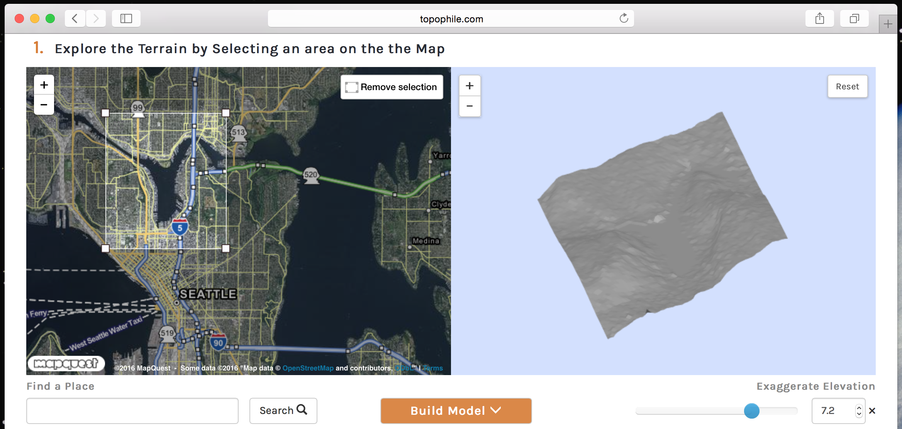
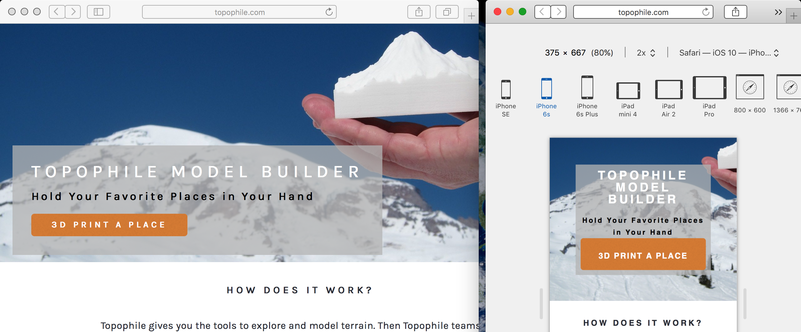
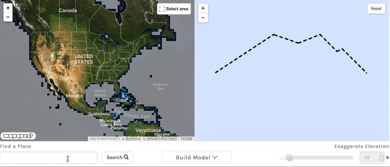
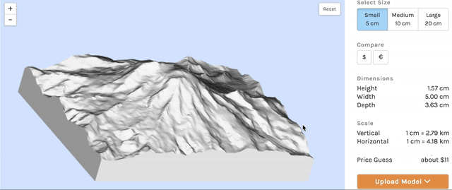
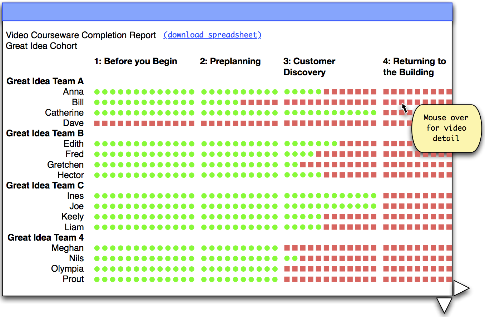
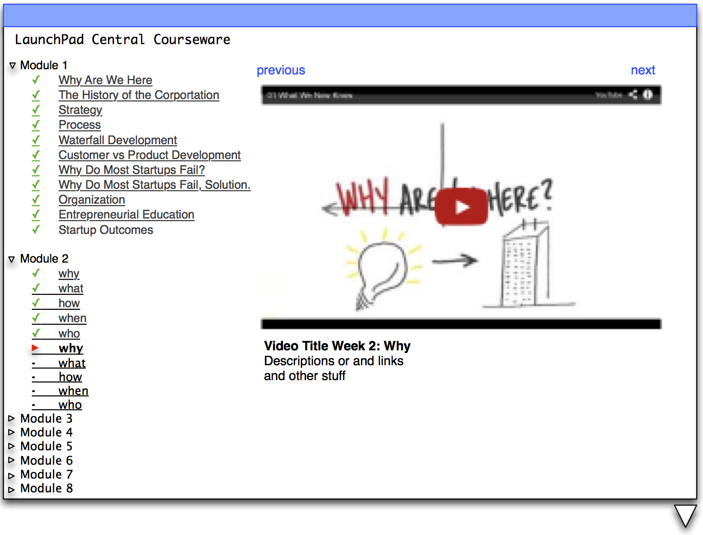
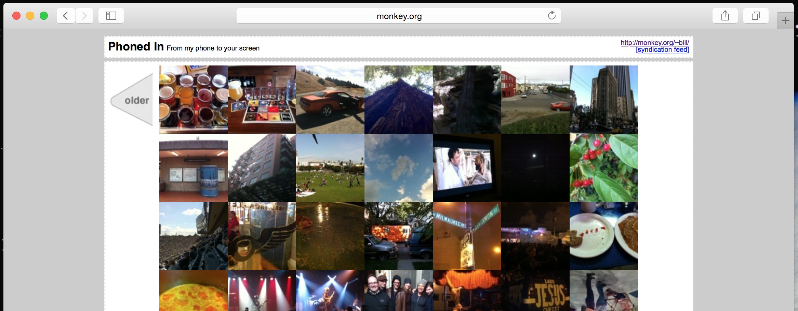
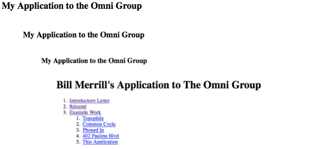

My name is Bill Merrill, I am web developer with comprehensive experience delivering internet products. I am applying for your Senior Front-End Web Developer position and would appreciate your consideration.
I started my career as the primary front-end developer creating HTML-based product interfaces for network security startup Arbor Networks. Since then I have developed ad and analytics platforms for millions of European IPTV viewers at Zattoo, worked in a small team to create a web publishing platform for Reuters, developed web-based educational materials for MySQL AB, and worked with entrepreneurs to create web products to bringing their ideas to the screen.
I began studying User Interaction at the University of Michigan; I wrote student-focused mapping and statistics software supporting the study of Learner Centered Design. I now take a direct and practical approach to User Experience development. My front-end focus is based in creating clear markup, logical styling, and safe javascript, and learning useful tools to generate them. Carefully considered and standards-based assets are the best first step towards creating accessible and indexable web pages; they respect the audience and focus on the goal of communication. I enjoy working with both content experts and visual designers to bring ideas and designs to actualization.
In addition to my front-end experience, I am web application developer, I create both client and server rendered applications. On the server I prefer Python and PHP, for client apps I have used several archictectures in creating single page applications. I also develop and administer topophile.com, a website that combines GIS and 3D printing technology letting people build models of the places they love.
I believe considering how work is done is an important part of success and enjoy working on self-aware teams. My years of working with multi-site organizations and as a remote consultant have taught me the importance of good communication hygiene. The right amount of process and communication feed back into themselves and make successes and problems evident.
Lastly, the LC III was my first Macintosh computer and I have used them as my primary computer ever since. I’ve used several of the Omni Group’s products over the years and I’d be very pleased to support their sale and use.
Thank you!
Bill
Example Work
Topophile Case Study
Visit Topophile.comhttp://topophile.com

Image: The Topophile Model Builder starts with finding the right location.
Topophile is a hobby business I’ve created to explore geographical data and geo-programming. The website gives a person familiar with online tools like MapQuest or Google Maps tools to 3D print custom models of the Earth’s surface. I am responsible for both the front and backend of the website and I’ll take this opportunity to talk about a couple points in the front-end.
Welcoming potential customers
The landing page, the first thing most users will see, was the last thing I completed before the initial launch. While the primary app did not work on mobile in 2014 (I’m now excited to see WebGL has become standard on iOS Safari and I look forward to improving the model builder for mobile) I did make sure the page was responsive and looked good on smartphone browsers.

Image: Using development tools to view the Topophile landing page in desktop and iPhone views.
Exploring elevation
The model builder has three steps, the first is exploring terrain. Rather than attempt a VR-like experience, I strove to use a familiar tiled web map for exploration and to query for the elevation of a selected area. On the left a person searches for a feature and selects an area on the map, on the right a low-resolution model of the terrain is quickly displayed. I wanted clarity and speed for this step as users spend some time perfecting their selection.

Animation: Users can query the elevation of an area by searching and selecting in standard web map.
Understanding Size
I found communicating the size of printed model to be very important as people decided to purchase. I started by selecting three standard sizes for a model and displayed the dimensions of the model numerically. Going further, I wanted to render an object a person might have handy for comparison. I chose a US dollar bill and a Euro note and added them to the 3D scene with the model. I hoped seeing an object on screen the user could also hold in hand might help them imagine the size of the final printed model.
In testing, I found people were reluctant to click the buttons. They thought the buttons were related to the purchase price rather than the size of the model. The next time I work on this element I will seek better solutions.

Animation: Users can compare their virtual model to an object they might have on hand, a dollar bill.
Asking for patience
I made a simple and I think beautiful clock animation using CSS to show the steps of unknowable duration that lead from a person designing a model to being able to purchase it from the 3D printing vendor. While functionally no different than a spinner, I liked the visual representation of the steps, they set up expectations and assure the user that something’s still happening.
Animation: Simplified clocks are used to indicate progress is being made.
LaunchPad Central Video Classroom
I created these wireframes in response to the first discussion of a video classroom for Launchpad Central. In the discussion we identified primary users and their goals. We had many of ideas for what could happen and some discussion of a minimum interface. These diagrams were more specific than our discussions and helped ground our questions about specific capabilities. I have used Omnigraffle for wireframing for most of my career, it is invaluable.
The two primary interfaces were the student’s viewing page and the instructor's completion report. I include the two wireframes I created to start the discussion before developing the interface.
I later implemented this front-end application using bootstrap and AngularJS backed by the Youtube API and our own use behavior tracking.

Image: Instructors would check this screen before class to confirm all teams have done the assigned viewings.

Image: Students would use this screen to watch coursework and check their progress on assignments.
I created a custom HTML and PHP blog theme for the bicycle repair collective I helped form in Ann Arbor, Michigan. The website is intentionally simple as the groups membership is a constantly evolving volunteer corps. Were I to re-implement this now I would include a responsive layout for mobile device users.
Phoned In
Check out Phoned Inhttp://monkey.org/~bill/pi/index.php?offset=101

Image: Phoned In's time grid with time moving forward similar to a wall calendar.
Phoned In is my attempt to create a sense of time and memory with my photos. Built in 2005, I posted photos from my cameraphone and the application displayed them in a calendar-like format. I wrote server software to receive MMS photos in Python and a PHP application to store and display the calendar grid. The latest photos are always in the lower right and the past is back to the left. I no longer post to Phoned In but still browse it.
My most lucrative and most simple web page. I created this love letter to my old house and used it to sell the house. Originally hosted at 402pauline.com, this is a copy.
My Application to the Omni Group

Image: A screenshot of this page got out of hand.
I’ve composed this application as a HTML5 document.
I starting writing prose in Pages to take advantage of standard writing tools like spelling and grammar checking. I made notes of images and animations I’d like to include and put placeholders in the prose.
Then I created a source control repository for the project and added a blank html file and a directory for media assets. I edited the html file using the Atom code editor and filled out a skeleton of tags with the basic structure of 3 sections, the Cover Letter, the Résumé, and the Example works. Later I pasted sections of prose into the skeleton, linked images and animations, and made simple style adjustments.
I used the built-in macOS tools to create screens shots of my websites and record videos for animations. I edited my screen shots using Preview.app and Acorn; I used the command line tool ‘ffmpeg’ to convert the videos to animated gifs.
During the creation of this document I hosted all the assets on a local apache2 httpd instance. I enjoy maintaining local development environments for my work. This a habit from days of less-than-reliable network connectivity.
As this is a simple document I’m not too worried about cross-browser display issues, but given the audience I’ve checked it in Omniweb, Safari, Chrome, Firefox on my Macbook Pro and Safari on my iPhone and iPad.
Once I was happy with the screen layout I created a print stylesheet for a good PDF presentation.
I’ve also checked the webpage using an HTML5 validator. While validators can be annoying and overly specific they do often point out deficiencies that should be addressed such as illegally used tags or missing attributes. I found 2 orphaned closing tags from developmental edits. Standards compliance goes a long way toward making an accessible document. When working with Javascript I find jslint to be invaluable in a similar capacity.
Résumé
Bill Merrill is an experienced Web Developer who enjoys working with teams to create excellent outcomes for users. He has both evolved existing technologies and created products from scratch. He hopes to join The Omni Group team to both help sell Omni's great products and help Omni's customers get the most from their tools.
Source Control: Git, SVN; Databases: SQL and Key-based;
Automation: Jenkins, Fabric, grunt, gulp, make
Experience
Founder, Topophile.com
Oct 2014 To Present
Topophile allows users to create custom 3D printed models of their favorite places. Bill developed an automated model design service, utilized open source geographic information tools and data, and integrated with Shapeways.com’s print API for model generation and fulfillment. He created all front-end experiences.
Engineering Consultant, Sindeo
May 2015 To Sept 2016
Sindeo is creating an online mortgage shopping and closing experience.
Major contributions:
Developed front-end and server-side tools to support privacy-focused user analytics including a javascript API and python proxy server.
Created Sindeo's automated Credit Score Check experience for mortgage pre-approvals. Worked with product and design teams to create a dynamic javascript user interface and application service. Created a seamless user experience by encapsulating third-party services including credit reporting and cloud storage in a single application.
Engineering Consultant, LaunchPad Central
Jan 2014 to Sept 2014
LaunchPad Central is an entrepreneurial education startup providing Lean Startup tools and curriculum. Bill worked closely with product management, customer success, educators, and engineering to develop features and improve reliability.
Major contributions:
Created a Video Classroom presenting curriculum to students. Built an analytics dashboard allowing educators to easily track students’ required progress thru the semester. Utilized Youtube APIs for highly available and low cost video delivery.
Piloted conversion of the existing web application from server-rendered templates to an AngularJS-based single page application. Expanded server APIs to support the new paradigm.
Zattoo is a European virtual cable provider offering live television on computers, mobiles, smart televisions, and set-top boxes. Bill created front-end user interfaces on desktop and mobile websites, managed and improved the server-side API and advertising system, and worked with marketing on promotional landing pages and displays.
Major contributions:
Transitioned the Zattoo ad infrastructure across vendors on a heroic timeframe. Specified, rewrote, deployed, tested, and supported operations to enable the switch before the extremely popular EUFA Euro 2012. Work spanned user front-end (web, iOS, android), Zattoo application servers, and vendor systems.
Bootstrapped and launched Zattoo’s Live TV Android App. Managed the major challenge of Android’s lack of live streaming video protocols.
Independent Engineering Consultant
April 2008 to Sept 2010
FetchDalton by Weber Innovations LLC
Create web tools for biochemists. Provided front-end application development, data management, operations, and user testing.
Systems Analysis for Symphono, LLC
Built tools to monitor and analyze high frequency trading systems.
Senior Software Engineer, Arbor Networks
Dec 2000 to March 2006
As a founding member of the Arbor Networks research and development team, Bill was directly involved in the initial design, implementation, and ongoing improvement of 3 world-class network security and management products: Peakflow DoS, Peakflow Traffic (later Peakflow SP), and Peakflow X.
Focused on user experience, data representation, and systems management, Bill developed and led teams developing components for web-based user interfaces, report generation tools, and business logic tackling data storage and management on a highly distributed network monitoring infrastructure.
Research Assistant, University of Michigan
Sept 1998 to Dec 2000
Developed software supporting environmental science education curriculum and Learner Centered Design.
Extracurricular Experience
Sept 1994 to Aug 1998
Interned with the IBM AS/400 Language Tools team profiling and improving the C, C++, and Modula-2 compilers.
Coordinated a student run self-driving vehicle project; developed visual analysis and path planning systems.
NSF Research Experiences for Undergraduate at University of Michigan Dearborn, developed an intelligent system for safety glass analysis later used by Ford Motor Company.
Education
University of Michigan, Ann Arbor, Michigan
Graduate studies in Education Technnologies and Artificial Intelligence
Michigan Technological University, Houghton, Michigan
Bachelor of Science in Computer Science
Contact
You can contact Bill at bill@monkey.org or 734-730-6561